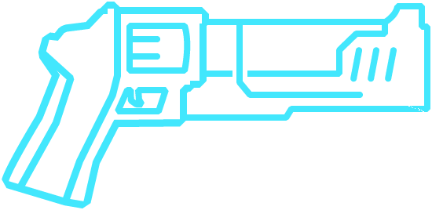
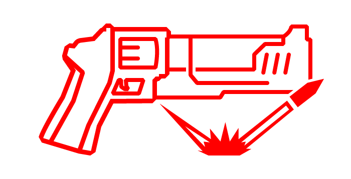

Revólveres
O Revólver Perfurante é a primeira arma encontrada em ULTRAKILL e é a variante azul do Revolver. Ele pode causar quantidades moderadas de dano com seu disparo primário e pode perfurar vários alvos fracos ou infligir dano concentrado em alvos únicos com seu disparo secundário.

O Revólver Artilheiro é a variante verde do revólver e dá ao jogador a capacidade de jogar moedas para o alto que, quando acertadas, atingem o ponto fraco do alvo mais próximo. Ele pode ser comprado no Terminal por 7.500P depois de obter o Revólver Perfurante.
O Revólver Certeiro é a variante vermelha do revólver que pode ser comprado no Terminal por 25.000P após a obtenção do Revólver Perfurante. Seu disparo secundário atira feixes de energia vermelha que podem ricochetear em superfícies, perfurar inimigos e destruir projéteis. O número de ricochetes aumenta com a velocidade com que o revólver é girado.
